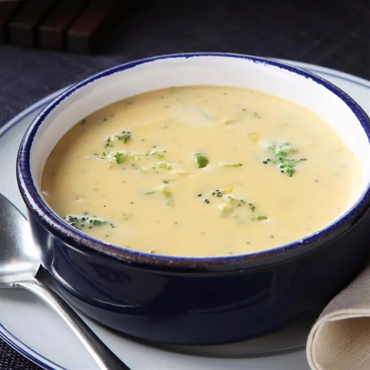

Broccoli Soup

Description
Enjoy the warm cheesy goodness of broccoli soup. The perfect meal for a
cold or rainy day. Simple, refreshing and enjoyed by the whole family.
Ingredients
- 2 tablespoons butter or margarine
- ¼ cup chopped onion
- 2 tablespoons flour
- 2 ½ cups milk
- ¾ pound VELVEETA®, cut up
- 1 (10 ounce) package frozen chopped broccoli, thawed, drained
- 1 (10 ounce) package frozen chopped broccoli, thawed, drained
Steps
-
Melt butter in a large saucepan on medium heat. Add onion; cook and stir
until onion is tender, about 5 minutes. Add flour; cook 1 minute or
until bubbly, stirring constantly.
-
Stir in milk. Bring to boil. Reduce heat to medium-low; simmer for 1
minute.
-
Add remaining ingredients; Velveeta cheese, broccoli, and pepper. Cook
until cheese is melted and soup is heated through, stirring
occasionally.
HOME